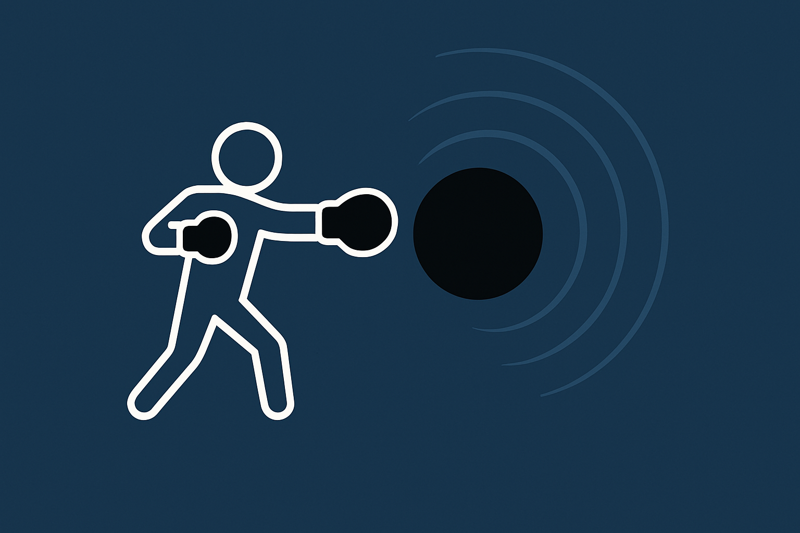

Theses
-
Bachelor's Thesis: Simulation of the diffuse emission of the Galaxy in the context of the LiteBIRD mission.
Supervisor: Marcos López-Caniego Alcarria (European Space Agency)
[PDF]
-
Master's Thesis: Multimessenger signatures of particle acceleration by black holes.
Supervisor: Rafael Alves Batista (Instituto de Física Teórica (UAM-CSIC) and Institut d'Astrophysique de Paris)
[PDF]
-
Master's Thesis: Probing the black hole ringdown through numerical perturbation theory.
Supervisors: Xisco Jiménez Forteza (University of the Balearic Islands), Sayak Datta (Gran Sasso Science Institute)
[PDF]
Publications
-
Spectral suppression of black hole ringdown tails.
Jose Antonio León Vega, Alejandro Svyatkovskyy Kholyavka, Sayak Datta, Xisco Jiménez Forteza.
arXiv:2606.02146 [gr-qc], 2026.
[arXiv]
-
Shaping black hole resonances I. Black hole ringdown as a spectral filtering process.
Alejandro Svyatkovskyy Kholyavka, Jose Antonio León Vega, Samuel Gómez Gómez, Xisco Jiménez Forteza, Sayak Datta.
arXiv:2605.24704 [gr-qc], 2026.
[arXiv]
Presentations
-
December 1, 2025: Gravity Days @ UIB (2nd edition), University of the Balearic Islands (Spain) —
[slides]
-
December 19, 2025: XVIII Black Holes Workshop, Instituto Superior Técnico (Portugal) —
[slides]

A visual intuition of black hole perturbations — slightly dramatized.